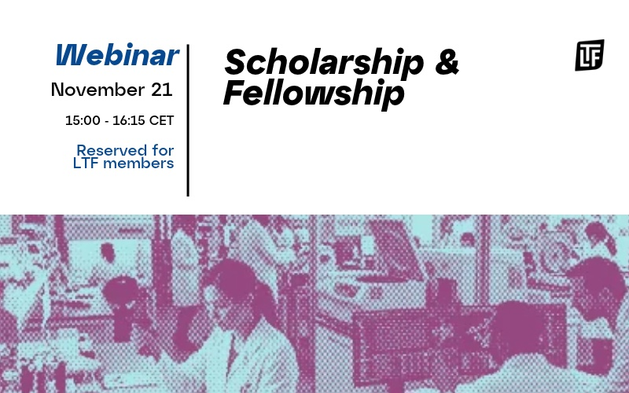

Webinar
Scholarships & Fellowships for PhD and Postdocs
Online webinar · LTF (reserved for LTF members)

I will be a speaker at “Scholarship & Fellowship”, an LTF webinar for Lead The Future members thinking about applying for a scholarship or a fellowship. The session is held in Italian.
Together with the other speakers, I will share practical information and concrete answers on how to navigate university applications and funding opportunities.